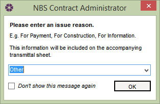

Issuing a form |
Once the form has been completed and checked, it can be issued to the appropriate parties. To issue a form in the current job, select the Issue Form icon from the editor toolbar.
A window will pop up asking to insert a reason for issuing the form - this is optional. The text will be displayed on the transmittal sheet.

When a form is issued, it will be saved and PDF copies of the form and corresponding transmittal sheet will be automatically created in the Output directory for the job, which is set in the Job Details tab. For more information on this, see Output Directory for Current Job.
Please Note: It is possible that the last single issued form can be recalled to edit it, but this is not recommended working practice.
See Also
Recalling the Last Form
Editing a Form
Spell Checker